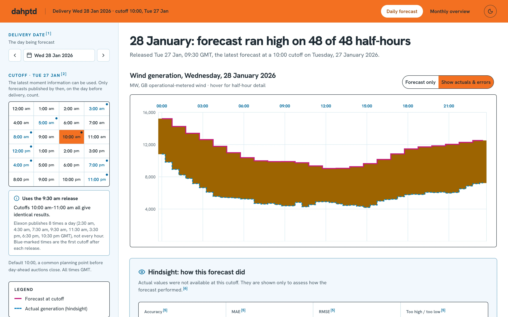
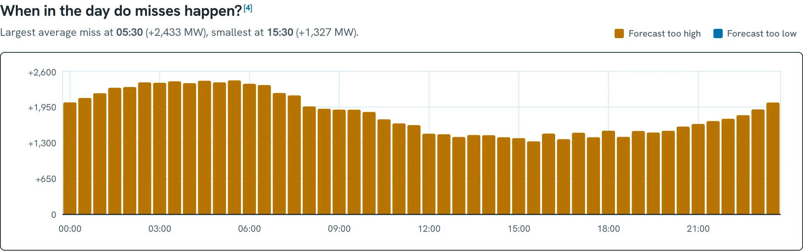
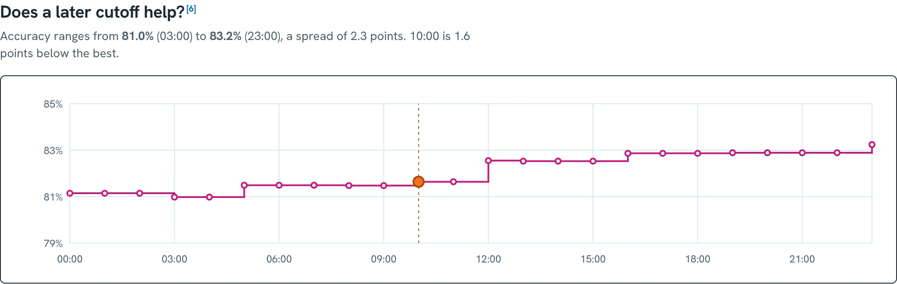

A January 2026 pilot for your day-ahead desk: the GB wind forecast you actually had at decision time, and how far to trust it.
Part 1 · Pilot walkthroughPart 2 · Technical review
Every morning you buy tomorrow's power on a forecast, not on the weather.
1 · The decision
1Which forecast did your desk actually have?
2 · Daily view
Delivery Fri 16 Jan · cutoff 10:00 Thu 15 Jan
This walkthrough uses the pilot's illustrative 10:00 default. A 09:00 cutoff, before the close, would show the 07:30 run instead.
1
Pick your cutoffAny hour on the day before delivery. The grid is your decision clock.
2
See the release rhythmBlue dots mark the first hour after each new Elexon release.
3
The exact run, named"Uses the 9:30 am release." Never a later one, never a blend.
4
Read the forecastMagenta is the forecast your desk had, hour by hour.
2Where did it miss? Turn on hindsight.
2 · Daily view
One switch adds what really happened
Darker band = bigger miss. Here 2,000+ MW too high
Green = too low
Same day, same 09:30 forecast
1
Show actuals & errorsActuals are marked as hindsight: your desk couldn't see them at 10:00.
2
The gap appearsEvery half-hour between forecast and actual is shaded.
3
Read the depthOrange too high, green too low. Darker means a bigger miss, on one fixed scale.
4
Scored, not eyeballed88.4% accurate; 27 half-hours too high, 21 too low; every half-hour charted.
Some days the forecast is badly wrong, and you see it instantly.
2 · Daily view

≈11 GW forecast, under 6 GW delivered
Wed 28 Jan · cutoff 10:00
48 / 48half-hours forecast too high
6.7%accuracy for the day
A desk trusting this forecast would have under-bought by about 5 GW, all day.
3How far can you trust it? January's verdict.
3 · Monthly view
84%of half-hours forecast too high (1,256 of 1,488)
+1,840 MWaverage overstatement, about 16% of actual output
81.6%month accuracy · 28 of 31 days ran high on average
In the day-by-day chart, the shaded gap sits above the actual line almost every day.
Which days go wrong? The whole month at a glance.
3 · Monthly view
28 Janworst day · 6.7% accuracy
20 Janbest day · 93.5% accuracy
Each day is shaded on the same depth scale and opens its daily view in one click.
Which hours go wrong? Early mornings.
3 · Monthly view

~2.4 GWtoo high on average at 05:30 (magenta ring)
~1.3 GWat 15:30, the closest slot (blue ring)
Be most sceptical of the forecast for overnight and early-morning blocks.
Would deciding later help? Barely.
3 · Monthly view

09:00, before the close · 81.5%
23:00 · 83.2%
+1.7accuracy points for waiting 14 more hours, until 23:00
So deciding before the auction closes costs almost nothing. The forecast's lean, not its timing, is what to plan around.
dahptd
How it's built, and why.
Architecture
Data snapshot
The no-hindsight rule
Alignment & metrics
Codebase map
Practices & trade-offs
Part 2 · Technical review
Two services, one bundled data snapshot, no database.
Architecture
A reproducible snapshot, not a live dependency.
Data
Elexon BMRS API
WINDFOR, every published run. FUELHH, fuelType WIND.
stream endpoints
scripts/download_data.py
Daily requests, 2 workers, retries
Removes duplicate records
Checks full half-hourly coverage first
Writes a manifest: URLs, counts, SHA-256
backend/data/elexon/
Committed, read-only, bundled into the Vercel function and Docker image.
18,272hourly forecast records, every release 31 Dec – 31 Jan
1,536half-hourly actuals, 1 Jan – 1 Feb, complete
~110 KBgzipped; refresh = run, commit, redeploy
The core rule: one release, the latest at or before the cutoff.
analysis.py
def latest_publication(publications, decision_at):
"""The single most recent publication
at or before the cutoff, if any."""
times = sorted(publications)
index = bisect_right(times, decision_at)
return times[index - 1] if index else None
# cutoff = delivery day − 1, Europe/London# hours the run lacks stay as gaps
As the cutoff sweeps the day, the chosen run only changes when a new release lands. Mixing runs would create a forecast nobody ever saw, so we never do.
Each hourly forecast is compared separately with both half-hours it covers, so variation inside the hour counts as error.
Error = forecast − actual (+ means too high)
MAE = mean |error| · RMSE pooled before the root
Accuracy = 100% − WAPE = 100% − Σ|e| ÷ Σ actual
Missing values stay null; scores report matched ÷ expected half-hours. Month scores pool all 1,488 half-hours rather than averaging daily figures.
Small, layered, easy to hand over.
Codebase
backend/
app/main.py HTTP, input validation
app/analysis.py selection, alignment, metrics
scripts/download_data.py snapshot refresh
data/elexon/ gz data + manifest
tests/ pytest
docs/methodology.mdassumptions + sources
frontend/app/
forecast-page.tsx daily view
forecast-chart.tsx contour + error charts
forecast-data.ts types, URL state, format
monthly/ page, charts, data
sheet.tsx shared shell, cutoff grid, keys
globals.css light + dark theme tokens
frontend/tests/pure-logic tests
Reading order: analysis.py top to bottom (≈240 lines) → main.py → forecast-data.ts → forecast-page.tsx. Business rules live in one backend module; UI logic sits in plain TS modules that test without React.
Boring on purpose: pinned, tested, checked on every push.
Practices
GitHub Actions, every push and pull request
Backenduv syncruff checkruff formatpytest · 14
Frontendeslintbun test · 15typechecknext build
Pinned Bun 1.4.3 and uv 0.13.4 with frozen lockfiles; Docker for both services; checksummed data. Data loads once per instance and views are memoised, so a 10 s function limit is plenty.
Orange controls in light mode, magenta in dark; the switch remembers your choice.
Known trade-offs → next steps: snapshot isn't live (scheduled ingestion + Blob storage) · WINDFOR interval semantics need publisher confirmation · per-instance cache only · AI assistants helped build this, with every rule covered by tests.
→ next step · ← back · F fullscreen · P presenter notes · H hide UI